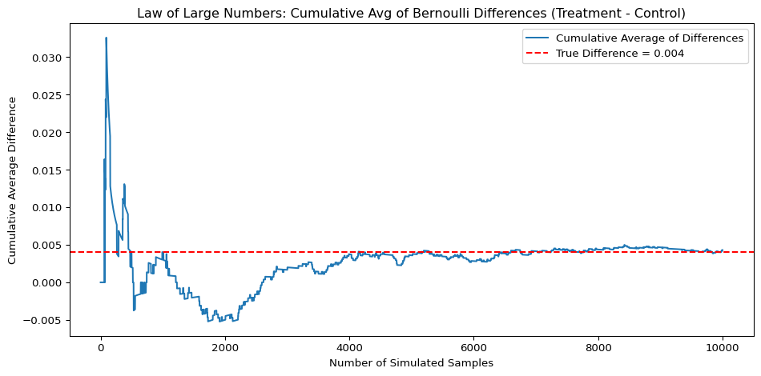

Dean Karlan at Yale and John List at the University of Chicago conducted a field experiment to test the effectiveness of different fundraising letters. They sent out 50,000 fundraising letters to potential donors, randomly assigning each letter to one of three treatments: a standard letter, a matching grant letter, or a challenge grant letter. They published the results of this experiment in the American Economic Review in 2007. The article and supporting data are available from the AEA website and from Innovations for Poverty Action as part of Harvard’s Dataverse.
The study was a natural field experiment involving 50,083 past donors to a U.S.-based civil liberties nonprofit. Participants were randomly assigned to either a control group (receiving a standard fundraising appeal) or a treatment group (receiving a letter mentioning a matching grant offer). Within the treatment group, participants were further randomly assigned to sub-treatments varying the matching ratio ($1:$1, $2:$1, $3:$1), the maximum match amount ($25,000, $50,000, $100,000, or unstated), and the suggested donation (“ask amount”) (equal to prior gift, 1.25×, or 1.5×). The experiment tested whether these pricing manipulations influenced donor behavior. While offering any match increased response rates and revenue per solicitation, larger match ratios did not produce statistically significant differences in giving. The study also explored how effects varied by geography and found greater responsiveness in “red” states (which had voted for George W. Bush in 2004). This nuanced field experiment contributed robust evidence to the demand-side economics of charitable giving.
This project seeks to replicate their results.
Data
Description
import pandas as pddf = pd.read_stata('karlan_list_2007.dta')df.describe()
treatment
control
ratio2
ratio3
size25
size50
size100
sizeno
askd1
askd2
...
redcty
bluecty
pwhite
pblack
page18_39
ave_hh_sz
median_hhincome
powner
psch_atlstba
pop_propurban
count
50083.000000
50083.000000
50083.000000
50083.000000
50083.000000
50083.000000
50083.000000
50083.000000
50083.000000
50083.000000
...
49978.000000
49978.000000
48217.000000
48047.000000
48217.000000
48221.000000
48209.000000
48214.000000
48215.000000
48217.000000
mean
0.666813
0.333187
0.222311
0.222211
0.166723
0.166623
0.166723
0.166743
0.222311
0.222291
...
0.510245
0.488715
0.819599
0.086710
0.321694
2.429012
54815.700533
0.669418
0.391661
0.871968
std
0.471357
0.471357
0.415803
0.415736
0.372732
0.372643
0.372732
0.372750
0.415803
0.415790
...
0.499900
0.499878
0.168561
0.135868
0.103039
0.378115
22027.316665
0.193405
0.186599
0.258654
min
0.000000
0.000000
0.000000
0.000000
0.000000
0.000000
0.000000
0.000000
0.000000
0.000000
...
0.000000
0.000000
0.009418
0.000000
0.000000
0.000000
5000.000000
0.000000
0.000000
0.000000
25%
0.000000
0.000000
0.000000
0.000000
0.000000
0.000000
0.000000
0.000000
0.000000
0.000000
...
0.000000
0.000000
0.755845
0.014729
0.258311
2.210000
39181.000000
0.560222
0.235647
0.884929
50%
1.000000
0.000000
0.000000
0.000000
0.000000
0.000000
0.000000
0.000000
0.000000
0.000000
...
1.000000
0.000000
0.872797
0.036554
0.305534
2.440000
50673.000000
0.712296
0.373744
1.000000
75%
1.000000
1.000000
0.000000
0.000000
0.000000
0.000000
0.000000
0.000000
0.000000
0.000000
...
1.000000
1.000000
0.938827
0.090882
0.369132
2.660000
66005.000000
0.816798
0.530036
1.000000
max
1.000000
1.000000
1.000000
1.000000
1.000000
1.000000
1.000000
1.000000
1.000000
1.000000
...
1.000000
1.000000
1.000000
0.989622
0.997544
5.270000
200001.000000
1.000000
1.000000
1.000000
8 rows × 48 columns
Variable Definitions
Variable
Description
treatment
Treatment
control
Control
ratio
Match ratio
ratio2
2:1 match ratio
ratio3
3:1 match ratio
size
Match threshold
size25
$25,000 match threshold
size50
$50,000 match threshold
size100
$100,000 match threshold
sizeno
Unstated match threshold
ask
Suggested donation amount
askd1
Suggested donation was highest previous contribution
askd2
Suggested donation was 1.25 x highest previous contribution
askd3
Suggested donation was 1.50 x highest previous contribution
ask1
Highest previous contribution (for suggestion)
ask2
1.25 x highest previous contribution (for suggestion)
ask3
1.50 x highest previous contribution (for suggestion)
amount
Dollars given
gave
Gave anything
amountchange
Change in amount given
hpa
Highest previous contribution
ltmedmra
Small prior donor: last gift was less than median $35
freq
Number of prior donations
years
Number of years since initial donation
year5
At least 5 years since initial donation
mrm2
Number of months since last donation
dormant
Already donated in 2005
female
Female
couple
Couple
state50one
State tag: 1 for one observation of each of 50 states; 0 otherwise
nonlit
Nonlitigation
cases
Court cases from state in 2004-5 in which organization was involved
statecnt
Percent of sample from state
stateresponse
Proportion of sample from the state who gave
stateresponset
Proportion of treated sample from the state who gave
stateresponsec
Proportion of control sample from the state who gave
stateresponsetminc
stateresponset - stateresponsec
perbush
State vote share for Bush
close25
State vote share for Bush between 47.5% and 52.5%
red0
Red state
blue0
Blue state
redcty
Red county
bluecty
Blue county
pwhite
Proportion white within zip code
pblack
Proportion black within zip code
page18_39
Proportion age 18-39 within zip code
ave_hh_sz
Average household size within zip code
median_hhincome
Median household income within zip code
powner
Proportion house owner within zip code
psch_atlstba
Proportion who finished college within zip code
pop_propurban
Proportion of population urban within zip code
Balance Test
As an ad hoc test of the randomization mechanism, I provide a series of tests that compare aspects of the treatment and control groups to assess whether they are statistically significantly different from one another.
================================================
mrm2 Analysis:
mrm2 Treatment mean: 13.011828117981734
mrm2 Control mean: 12.99814226643495
mrm2 All Mean: 13.00726808034823
________________________________________________
t-test:
t-statistic: 0.1195315522817725
p-value: 0.9048549631450833
________________________________________________
Linear Regression:
Coefficient on Treatment: 0.013685851546779986
p-value: 0.904885973177816
================================================
couple Analysis:
couple Treatment mean: 0.09135794896957802
couple Control mean: 0.0929748269737245
couple All Mean: 0.0918974149381833
________________________________________________
t-test:
t-statistic: -0.5822577486767693
p-value: 0.5603971270058028
________________________________________________
Linear Regression:
Coefficient on Treatment: -0.0016168780041463048
p-value: 0.5593646446996638
================================================
female Analysis:
female Treatment mean: 0.2751509208469954
female Control mean: 0.2826978395250627
female All Mean: 0.27766887200849466
________________________________________________
t-test:
t-statistic: -1.7535132542519636
p-value: 0.07952338672686232
________________________________________________
Linear Regression:
Coefficient on Treatment: -0.007546918678066679
p-value: 0.07869095826986866
================================================
ave_hh_sz Analysis:
ave_hh_sz Treatment mean: 2.4300146102905273
ave_hh_sz Control mean: 2.427002429962158
ave_hh_sz All Mean: 2.4290122985839844
________________________________________________
t-test:
t-statistic: 0.8233500123023987
p-value: 0.4103151242417935
________________________________________________
Linear Regression:
Coefficient on Treatment: 0.003012174284715988
p-value: 0.409801160289328
To assess the randomization, I tested several baseline variables (e.g., months since last donation, gender, couple status, average household size within zip) using both t-tests and linear regressions and in every case the results from the two methods were nearly identical. None of the variables showed statistically significant differences at the 95% level, confirming balance between treatment and control groups. This supports the validity of the randomization and mirrors the role of Table 1 in the paper, which demonstrates baseline equivalence.
Experimental Results
Charitable Contribution Made
First, I analyze whether matched donations lead to an increased response rate of making a donation.
import matplotlib.pyplot as pltdf_bar = df[['treatment', 'control', 'gave']].dropna()df_bar['group'] = df_bar.apply(lambda row: 'Treatment'if row['treatment'] ==1else'Control', axis=1)donation_rates = df_bar.groupby('group')['gave'].mean()plt.figure(figsize=(6, 5))ax = donation_rates.plot(kind='bar')for i, value inenumerate(donation_rates): ax.text(i, value +0.0001, f'{value:.3f}', ha='center', va='bottom')plt.ylabel('Proportion Donated')plt.title('Donation Rate by Group')plt.ylim(0, 0.03)plt.xticks(rotation=0)plt.tight_layout()plt.show()
The bar plot compares donation rates between the treatment and control groups. The treatment group, which received a matching donation offer, had a higher donation rate (2.2%) than the control group (1.8%). This visual evidence suggests that the presence of a matching grant increased the likelihood of donating, consistent with the main findings in the paper.
================================================
'gave' Analysis:
'gave' Treatment mean: 0.02203856749311295
'gave' Control mean: 0.017858212980164198
Mean Difference: 0.00418035451294875
'gave' All mean: 0.020645728091368328
________________________________________________
t-test:
t-statistic: 3.2094621908279835
p-value: 0.001330982345091547
________________________________________________
Linear Regression:
Coefficient on Treatment: 0.004180354512949377
p-value: 0.001927402594901797
To test whether matched donations increase giving, I compared donation rates between the treatment and control groups using a t-test and a bivariate regression. The treatment group had a slightly higher donation rate (2.2% vs. 1.8%), and the difference was statistically significant in both tests. This matches results in Table 2A, Panel A of the original study and suggests that even a modest match offer can meaningfully boost donation rates. The finding highlights how small psychological nudges—like matching gifts—can influence charitable behavior.
To replicate Table 3, Column 1 of Karlan and List (2007), I ran a probit regression with a binary outcome for donation and treatment assignment as the sole predictor. The marginal effect of treatment was 0.0043, closely matching the 0.004 reported in the paper. This confirms that the presence of a matching grant increased the probability of donating by roughly 0.4 percentage points, a statistically significant effect. While small in magnitude, the result reinforces the finding that subtle changes in perceived impact, such as matching gifts, can meaningfully influence donation behavior.
Differences between Match Rates
Next, I assess the effectiveness of different sizes of matched donations on the response rate.
from scipy.stats import ttest_inddf_match = df[df['treatment'] ==1][['gave', 'ratio2', 'ratio3']].dropna()# Create labels for ratio group (1:1, 2:1, 3:1)def classify_ratio(row):if row['ratio2'] ==1:return'2:1'elif row['ratio3'] ==1:return'3:1'else:return'1:1'df_match['match_ratio'] = df_match.apply(classify_ratio, axis=1)# Pairwise t-tests between ratiosratios = ['1:1', '2:1', '3:1']pairwise_results = {}for i inrange(len(ratios)):for j inrange(i +1, len(ratios)): group1 = df_match[df_match['match_ratio'] == ratios[i]]['gave'] group2 = df_match[df_match['match_ratio'] == ratios[j]]['gave'] t_stat, p_value = ttest_ind(group1, group2, equal_var=False)print("================================================")print(f'{ratios[i]} vs {ratios[j]}\n')print(f't-statistic: {t_stat}')print(f'p-value: {p_value}\n')
================================================
1:1 vs 2:1
t-statistic: -0.965048975142932
p-value: 0.33453078237183076
================================================
1:1 vs 3:1
t-statistic: -1.0150174470156275
p-value: 0.31010856527625774
================================================
2:1 vs 3:1
t-statistic: -0.05011581369764474
p-value: 0.9600305476940865
To test whether the size of the match ratio influenced donation behavior, I conducted a series of pairwise t-tests comparing response rates between the 1:1, 2:1, and 3:1 match groups. None of the differences were statistically significant at the 95% level. For example, the difference between the 2:1 and 1:1 groups yielded a p-value of 0.33, and the difference between the 3:1 and 2:1 groups had a p-value of 0.96. These results support the authors’ statement in Table 2A and on page 8 of the paper: while match offers increase giving relative to no match, larger match ratios do not provide additional benefit in terms of increasing the likelihood of donating.
# Alternative: use ratio as a categorical variablemodel2 = smf.ols('gave ~ ratio', data=df).fit()model2_summary = model2.summary2().as_text()print(model2_summary)
To test whether the match ratio affects donation behavior, I regressed the binary outcome gave on ratio as a categorical variable. Using the 1:1 match as the reference group, I found that the 2:1 and 3:1 match ratios had slightly higher donation rates, with coefficients of 0.0048 and 0.0049 respectively, both statistically significant at the 1% level. The 1:1 coefficient was smaller and not statistically significant. These results suggest that higher match ratios may slightly increase the likelihood of donating, although the effect is small in magnitude and inconsistent with earlier t-test results.
response_rates = df_match.groupby('match_ratio')['gave'].mean()diff_2v1_direct = response_rates['2:1'] - response_rates['1:1']diff_3v2_direct = response_rates['3:1'] - response_rates['2:1']coef_2v1_reg = model2.params['ratio[T.2]'] - model2.params['ratio[T.1]']coef_3v2_reg = model2.params['ratio[T.3]'] - model2.params['ratio[T.2]']print("Direct from data: \n")print(f"2:1 vs 1:1: {diff_2v1_direct}")print(f"3:1 vs 2:1: {diff_3v2_direct}")print("================================================")print("From regression coefficients: \n")print(f"2:1 vs 1:1: {coef_2v1_reg}")print(f"3:1 vs 2:1: {coef_3v2_reg}")
Direct from data:
2:1 vs 1:1: 0.0018842510217149944
3:1 vs 2:1: 0.00010002398025293902
================================================
From regression coefficients:
2:1 vs 1:1: 0.0018842510217151158
3:1 vs 2:1: 0.00010002398025313504
To assess whether larger match ratios increase the likelihood of donating, I calculated the differences in response rates both directly from the data and from regression coefficients. The results were nearly identical across both methods:
The difference between 2:1 and 1:1 was about 0.19 percentage points.
The difference between 3:1 and 2:1 was effectively zero.
The difference between 3:1 and 1:1 was again about 0.20 percentage points.
These findings confirm that while moving from a 1:1 to a 2:1 or 3:1 match may result in a small increase in donation likelihood, the differences are minimal and statistically weak. This supports the paper’s conclusion that larger match ratios do not meaningfully improve response rates beyond the effect of having a match at all.
Size of Charitable Contribution
In this subsection, I analyze the effect of the size of matched donation on the size of the charitable contribution.
I conducted a t-test to compare average donation amounts between the treatment and control groups. The test produced a t-statistic of 1.92 and a p-value of 0.055, which is just above the conventional 5 percent significance threshold. This suggests a weak, but not statistically significant, indication that the treatment may have increased donation amounts. While the result hints at a possible effect, it is not strong enough to draw a firm conclusion about the impact of matched donations on how much people give.
To analyze how much people donate conditional on giving, I restricted the data to respondents who made a donation and ran a t-test comparing donation amounts between treatment and control groups. The t-test produced a t-statistic of -0.58 and a p-value of 0.56, indicating no statistically significant difference in donation amounts. This suggests that while matched donations may influence whether someone gives, they do not affect how much donors give once they’ve decided to contribute. Because treatment was randomly assigned, the coefficient has a causal interpretation, but in this case, the effect size is negligible.
The histograms show the distribution of donation amounts among individuals who gave, separated by treatment group. Both distributions are right-skewed, with most donations concentrated at lower amounts. The red dashed lines mark the mean donation in each group: $43.87 for treatment and $45.54 for control. The similarity in means visually confirms earlier statistical results, indicating that while the presence of a match may influence whether someone donates, it does not significantly affect how much they give once they’ve decided to contribute.
Simulation Experiment
As a reminder of how the t-statistic “works,” in this section I use simulation to demonstrate the Law of Large Numbers and the Central Limit Theorem.
Suppose the true distribution of respondents who do not get a charitable donation match is Bernoulli with probability p=0.018 that a donation is made.
Further suppose that the true distribution of respondents who do get a charitable donation match of any size is Bernoulli with probability p=0.022 that a donation is made.
Law of Large Numbers
np.random.seed(42)# Control group: Bernoulli(p=0.018), 100,000 drawscontrol_sim = np.random.binomial(n=1, p=0.018, size=100000)# Treatment group: Bernoulli(p=0.022), 10,000 drawstreatment_sim = np.random.binomial(n=1, p=0.022, size=10000)# diff_vector = treatment_sim - np.random.choice(control_sim, size=10000)diff_vector = treatment_sim - control_sim[:10000]cumulative_avg = np.cumsum(diff_vector) / np.arange(1, len(diff_vector) +1)true_diff =0.022-0.018plt.figure(figsize=(10, 5))plt.plot(cumulative_avg, label='Cumulative Average of Differences')plt.axhline(y=true_diff, color='red', linestyle='--', label=f'True Difference = {true_diff:.3f}')plt.title('Law of Large Numbers: Cumulative Avg of Bernoulli Differences (Treatment - Control)')plt.xlabel('Number of Simulated Samples')plt.ylabel('Cumulative Average Difference')plt.legend()plt.tight_layout()plt.show()

This plot illustrates the Law of Large Numbers using simulated donation data. I calculated the cumulative average difference in donation rates between treatment (2.2 percent) and control (1.8 percent) groups across 10,000 simulated comparisons. The blue line shows how the average difference stabilizes, while the red dashed line marks the true difference (0.004). As more samples accumulate, the cumulative average converges to the true value, confirming that larger samples yield more reliable estimates.
These histograms show the distribution of average differences in donation rates between treatment and control groups across 1,000 simulations at sample sizes of 50, 200, 500, and 1000. At smaller sizes, the distributions are wide and zero (red) is near the center, reflecting high uncertainty. As the sample size grows, the distributions narrow and more centered around the true difference (black) and zero (red) moves toward the tail, making it less likely. This demonstrates the Central Limit Theorem and shows that larger samples improve our ability to detect small treatment effects.